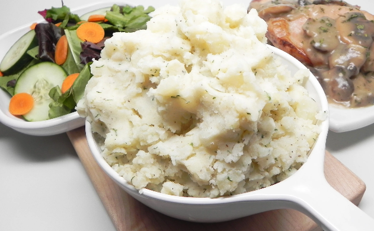

Mashed potatoes

Description
Simple mashed potatoes that will leave your tastebuds satisfied!
Ingredients
- 2 large Potatoes (Peeled is optional)
- Salt and Pepper
- Half a stick of butter
- 1 cup of water or chicken stock
Steps
- Wash your potatoes
- Boil the liquid in a pot and toss in the potatoes
- Use a fork to poke the potatoes to see if they're ready. The fork should easily penetrate the potatoes. If not, then give it a few more minutes.
- Drain the liquid while leaving the potatoes in the pot
- Grab a potato masher (a fork works as well), and start mashing away
- Once the potatoes are mashed and still hot. Add the butter, salt, and pepper to taste. Then, stir the ingredients together.